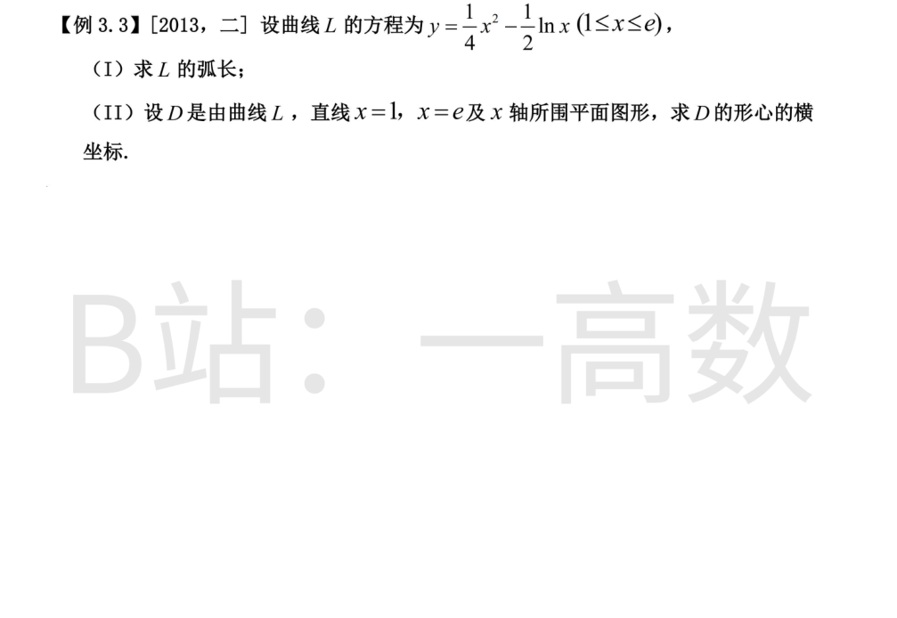
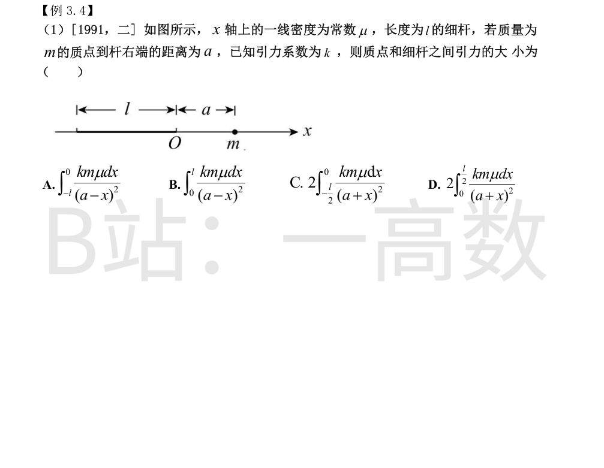
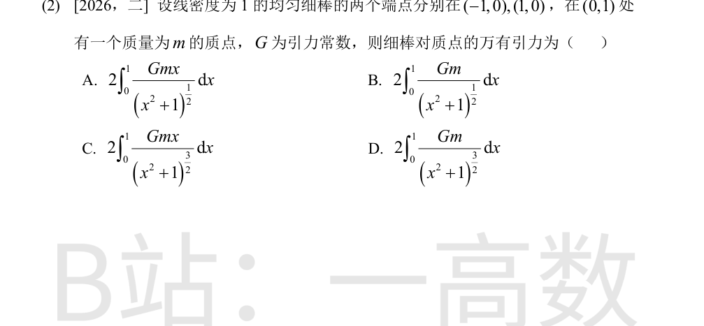
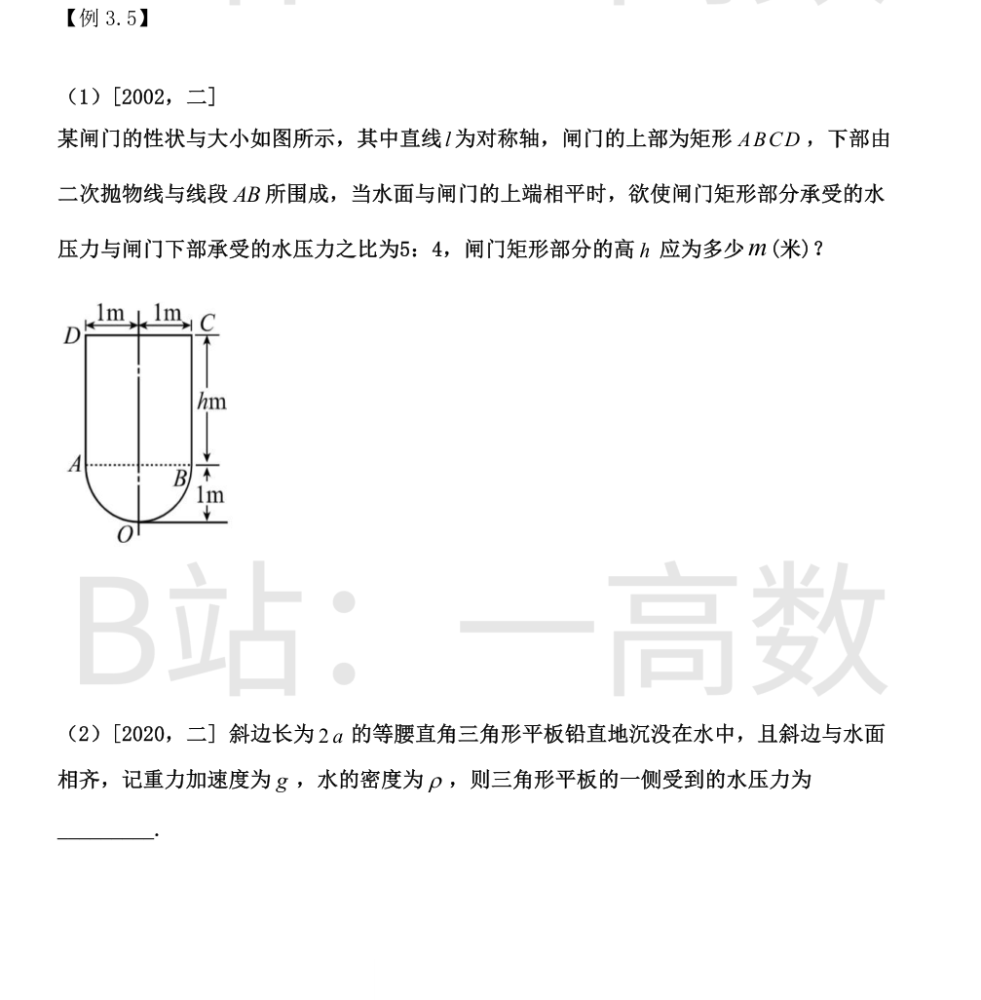
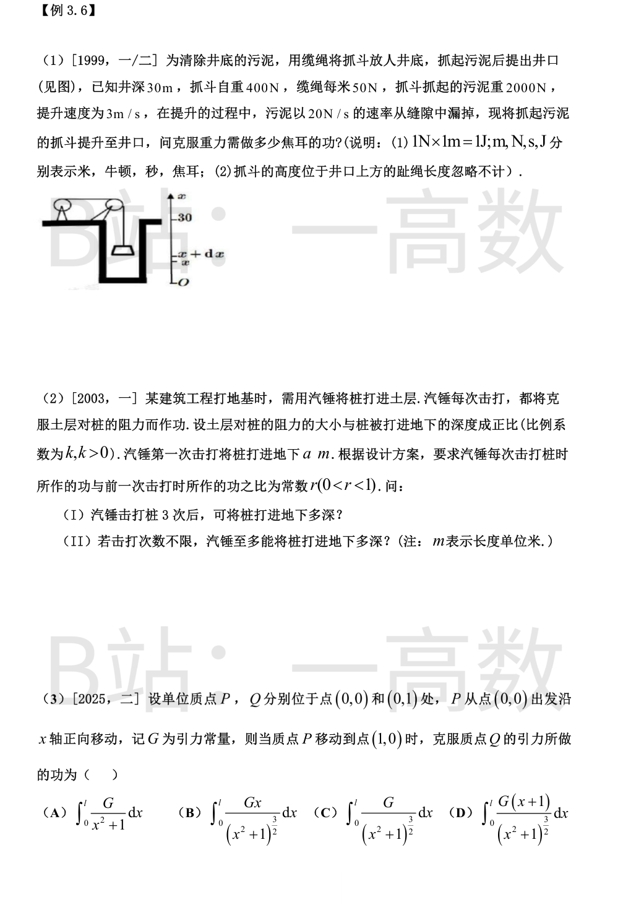
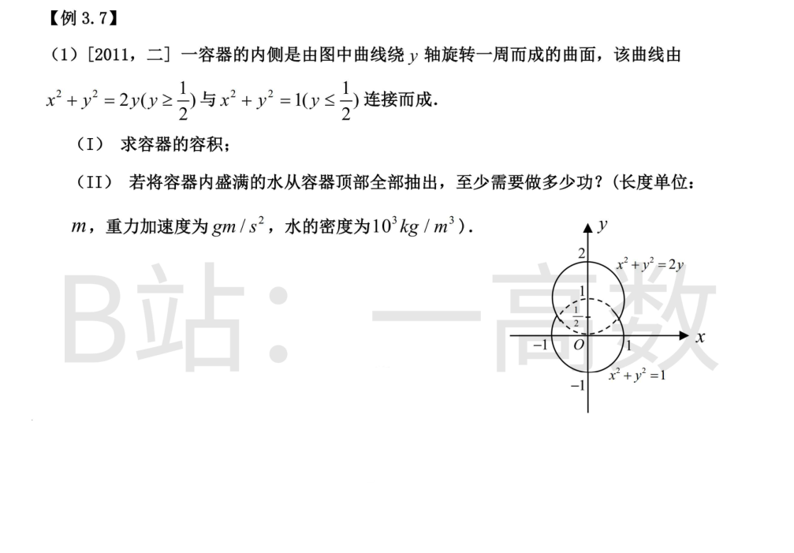
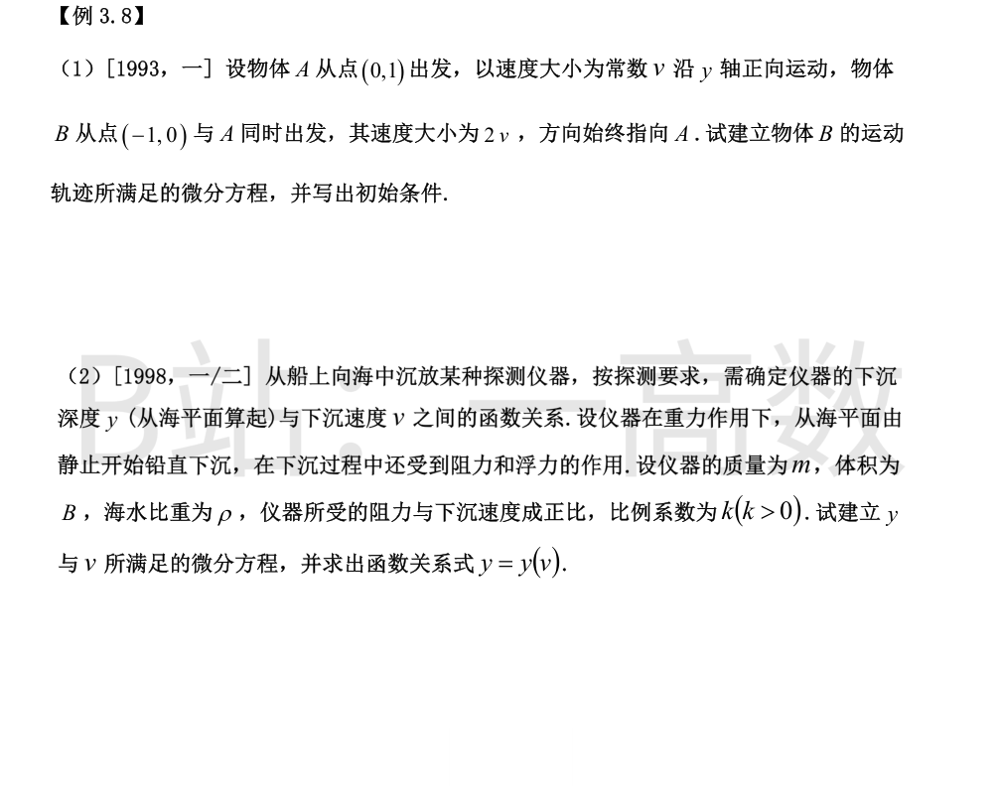
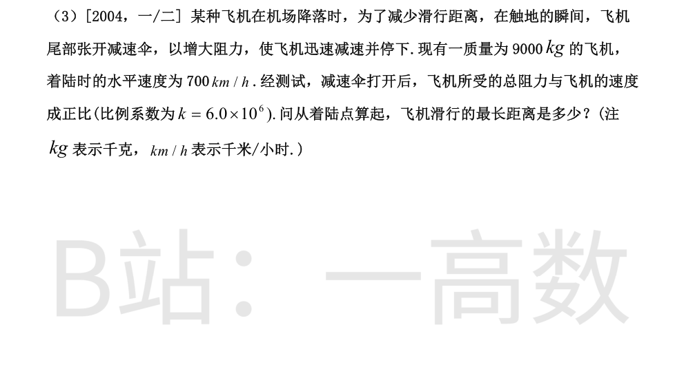
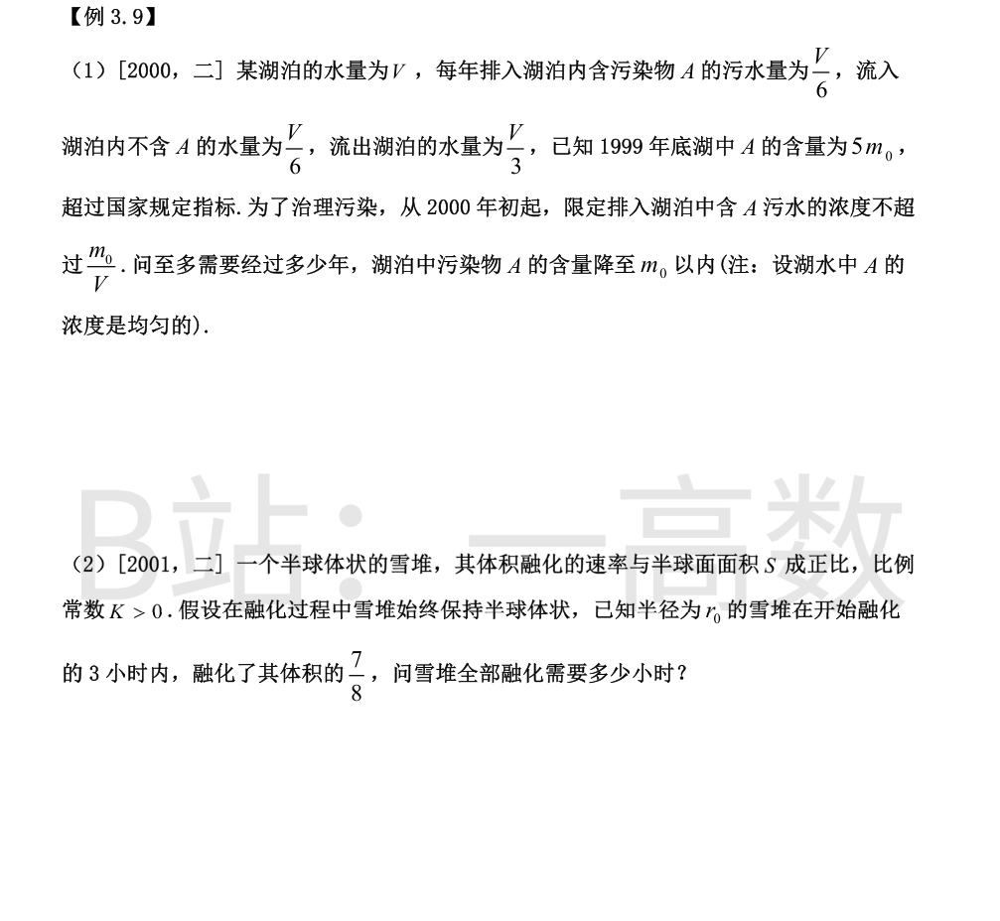
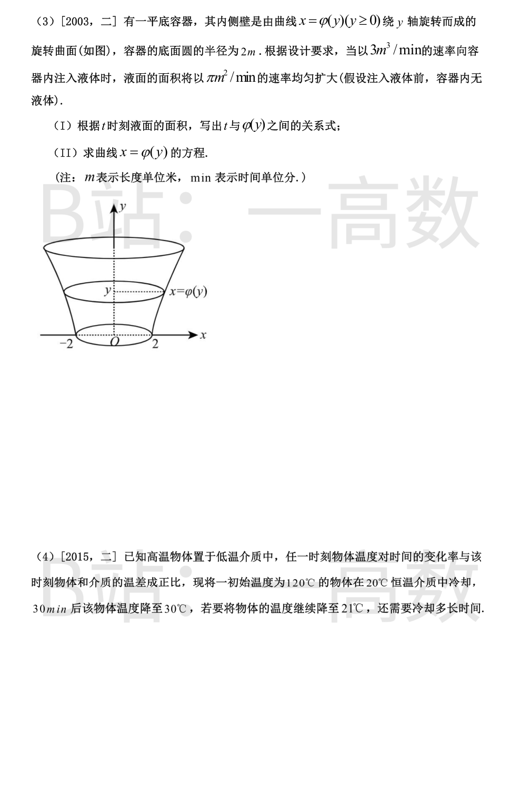

求导：$$y'=\frac{x}{2}-\frac{1}{2x}=\frac{x^2-1}{2x}.$$于是$$1+(y')^2=1+\frac{(x^2-1)^2}{4x^2}=\frac{x^4+2x^2+1}{4x^2}=\frac{(x^2+1)^2}{4x^2},$$因 $x\ge 1$，$$\sqrt{1+(y')^2}=\frac{x^2+1}{2x}.$$弧长$$s=\int_1^e\frac{x^2+1}{2x}\,dx=\int_1^e\left(\frac{x}{2}+\frac{1}{2x}\right)dx=\left[\frac{x^2}{4}+\frac{1}{2}\ln x\right]_1^e=\frac{e^2}{4}+\frac{1}{2}-\frac{1}{4}=\frac{e^2+1}{4}.$$
在 $[1,e]$ 上 $y'=\frac{x^2-1}{2x}\ge 0$，$y$ 递增且 $y(1)=\frac14>0$，故 D 位于 $x$ 轴上方：$D=\{(x,y)\mid 1\le x\le e,\ 0\le y\le \frac{x^2}{4}-\frac12\ln x\}$。
面积：$$A=\int_1^e\left(\frac{x^2}{4}-\frac12\ln x\right)dx=\left[\frac{x^3}{12}-\frac12(x\ln x-x)\right]_1^e=\frac{e^3}{12}-\left(\frac{1}{12}+\frac12\right)=\frac{e^3-7}{12}.$$
对 $y$ 轴的静矩：$$M_y=\int_1^e x\left(\frac{x^2}{4}-\frac12\ln x\right)dx=\int_1^e\left(\frac{x^3}{4}-\frac{x}{2}\ln x\right)dx.$$其中$$\int_1^e\frac{x^3}{4}dx=\frac{e^4-1}{16},\qquad \int_1^e\frac{x}{2}\ln x\,dx=\left[\frac{x^2\ln x}{4}-\frac{x^2}{8}\right]_1^e=\frac{e^2}{8}+\frac18=\frac{e^2+1}{8},$$故$$M_y=\frac{e^4-1}{16}-\frac{e^2+1}{8}=\frac{e^4-2e^2-3}{16}.$$
形心横坐标：$$\bar{x}=\frac{M_y}{A}=\frac{e^4-2e^2-3}{16}\cdot\frac{12}{e^3-7}=\frac{3(e^4-2e^2-3)}{4(e^3-7)}.$$（数值约为 2.11，位于 $[1,e]$ 内，合理。）


由图，细杆占据 $x$ 轴上 $[-l,0]$，质点位于 $x=a$。在杆上坐标 $x$ 处取微元 $[x,x+dx]$，$dm=\mu\,dx$，它到质点的距离为 $a-x$。由万有引力定律$$dF=\frac{km\mu\,dx}{(a-x)^2},$$各微元引力方向均沿 $x$ 轴，可直接相加：$$F=\int_{-l}^{0}\frac{km\mu}{(a-x)^2}\,dx=km\mu\left[\frac{1}{a-x}\right]_{-l}^{0}=km\mu\left(\frac1a-\frac{1}{a+l}\right)=\frac{km\mu l}{a(a+l)}.$$对照选项，A 为 $\displaystyle\int_{-l}^{0}\frac{km\mu\,dx}{(a-x)^2}$，正确；B 积分限错误；C、D 中 $(a+x)^2$ 对应杆位于 $[0,l]$ 的情形，均不符。故选 A。
杆上点 $(x,0)$ 处取微元 $dm=1\cdot dx$，它到质点 $(0,1)$ 的距离 $r=\sqrt{x^2+1}$，微元对质点引力大小$$dF=\frac{Gm\,dx}{x^2+1},$$方向由质点指向微元，即沿 $(x,-1)/\sqrt{x^2+1}$。由对称性（$x\to -x$），水平分量互相抵消，只余铅直分量：$$dF_y=dF\cdot\frac{1}{\sqrt{x^2+1}}=\frac{Gm\,dx}{(x^2+1)^{3/2}}.$$总引力$$F=\int_{-1}^{1}\frac{Gm}{(x^2+1)^{3/2}}dx=2\int_0^1\frac{Gm}{(x^2+1)^{3/2}}dx=2Gm\left[\frac{x}{\sqrt{x^2+1}}\right]_0^1=\sqrt{2}\,Gm.$$对照选项，D 为 $\displaystyle 2\int_0^1\frac{Gm}{(x^2+1)^{3/2}}dx$，正确；A、B 分母次数不够（未投影），C 多乘了 $x$。故选 D。

取 $y$ 为水面以下深度（$\rho g$ 为水的重度）。矩形部分宽为 2，深度范围 $[0,h]$：$$P_1=\rho g\int_0^h 2y\,dy=\rho g\,h^2.$$
下部深 1m、半宽 1m，抛物线以最低点为顶点，深度 $y\in[h,h+1]$ 处距底 $(h+1-y)$，由抛物线对称性该处半宽 $=\sqrt{h+1-y}$，宽 $=2\sqrt{h+1-y}$：$$P_2=\rho g\int_h^{h+1}2y\sqrt{h+1-y}\,dy.$$令 $u=h+1-y$：$$\int_h^{h+1}y\sqrt{h+1-y}\,dy=\int_0^1(h+1-u)\sqrt u\,du=\frac{2}{3}(h+1)-\frac25,$$故$$P_2=\rho g\left[\frac{4}{3}(h+1)-\frac45\right].$$
由 $P_1:P_2=5:4$：$$\frac{h^2}{\frac43(h+1)-\frac45}=\frac54\ \Longrightarrow\ 4h^2=\frac{20}{3}(h+1)-4\ \Longrightarrow\ 12h^2=20h+8\ \Longrightarrow\ 3h^2-5h-2=0.$$解得 $(3h+1)(h-2)=0$，取正根 $h=2$（米）。
斜边在水面上，长 $2a$；等腰直角三角形斜边上的高等于 $a$（直角顶点在深度 $a$ 处）。深度 $y\in[0,a]$ 处平行于水面的弦长由相似三角形得$$w(y)=2a\cdot\frac{a-y}{a}=2(a-y).$$水压力$$P=\rho g\int_0^a y\cdot 2(a-y)\,dy=2\rho g\left[\frac{a y^2}{2}-\frac{y^3}{3}\right]_0^a=2\rho g\left(\frac{a^3}{2}-\frac{a^3}{3}\right)=\frac{1}{3}\rho g a^3.$$


提升全程用时 $t=30/3=10$ s。以 $x$ 表示抓斗已提升的高度（$0\le x\le 30$），此时经过时间 $t=x/3$。
(1) 抓斗自重（恒力）：$$W_1=400\times 30=12000\ (J).$$
(2) 缆绳：提升到 $x$ 时井中缆绳长 $(30-x)$ m，重 $50(30-x)$ N：$$W_2=\int_0^{30}50(30-x)\,dx=50\left[30x-\frac{x^2}{2}\right]_0^{30}=50\times 450=22500\ (J).$$
(3) 污泥：时刻 $t$ 剩余污泥重 $2000-20t=2000-\frac{20}{3}x$ N：$$W_3=\int_0^{30}\left(2000-\frac{20}{3}x\right)dx=2000\times 30-\frac{20}{3}\times 450=60000-3000=57000\ (J).$$
总功$$W=W_1+W_2+W_3=12000+22500+57000=91500\ (J).$$
桩打入深度 $x$ 时阻力为 $kx$。第一次击打做功$$W_1=\int_0^a kx\,dx=\frac{1}{2}ka^2.$$由等比规律，前 $n$ 次击打累计做功$$W_n=W_1(1+r+\cdots+r^{n-1})=W_1\cdot\frac{1-r^n}{1-r}=\frac{ka^2}{2}\cdot\frac{1-r^n}{1-r}.$$设此时桩深为 $d_n$，克服阻力做功 $\displaystyle\int_0^{d_n}kx\,dx=\frac{1}{2}kd_n^2$，故$$\frac12 k d_n^2=\frac12 k a^2\cdot\frac{1-r^n}{1-r}\ \Longrightarrow\ d_n=a\sqrt{\frac{1-r^n}{1-r}}.$$
(I) $n=3$：$$d_3=a\sqrt{\frac{1-r^3}{1-r}}.$$
(II) 次数不限，$n\to\infty$，因 $0<r<1$，$r^n\to 0$：$$\lim_{n\to\infty}d_n=\frac{a}{\sqrt{1-r}}.$$
P 位于 $(x,0)$ 时，与 $Q(0,1)$ 相距 $r=\sqrt{x^2+1}$，引力大小 $\frac{G}{x^2+1}$（两质点均为单位质量），方向由 P 指向 Q，即沿 $(-x,1)/\sqrt{x^2+1}$。其沿运动方向（$x$ 轴正向）的分量为$$F_x=-\frac{G}{x^2+1}\cdot\frac{x}{\sqrt{x^2+1}}=-\frac{Gx}{(x^2+1)^{3/2}},$$它与运动方向相反，是阻力。克服引力做的功$$W=\int_0^1\frac{Gx}{(x^2+1)^{3/2}}\,dx=\left[-\frac{G}{\sqrt{x^2+1}}\right]_0^1=G\left(1-\frac{1}{\sqrt2}\right).$$对照选项，B 为 $\displaystyle\int_0^1\frac{Gx}{(x^2+1)^{3/2}}dx$，正确；A 未乘杠杆分量 $x/\sqrt{x^2+1}$；C 漏掉分子 $x$（那是引力大小而非沿运动方向的分量）；D 形式不对。故选 B。
两段曲线在 $y=\frac12$ 处均有 $x^2=\frac34$，光滑连接。容器：下部 $-1\le y\le\frac12$ 满足 $x^2=1-y^2$，上部 $\frac12\le y\le 2$ 满足 $x^2=2y-y^2$。
(I) 绕 $y$ 轴旋转：$$V=\pi\int_{-1}^{1/2}(1-y^2)\,dy+\pi\int_{1/2}^{2}(2y-y^2)\,dy.$$第一式 $=\pi\left[y-\frac{y^3}{3}\right]_{-1}^{1/2}=\pi\left(\frac{11}{24}+\frac23\right)=\frac{9\pi}{8}$；第二式 $=\pi\left[y^2-\frac{y^3}{3}\right]_{1/2}^{2}=\pi\left(\frac43-\frac{5}{24}\right)=\frac{9\pi}{8}$。故$$V=\frac{9\pi}{8}+\frac{9\pi}{8}=\frac{9\pi}{4}.$$
(II) 顶部为 $y=2$。取高度 $y$ 处薄层，体积 $\pi x^2\,dy$，重 $\rho g\pi x^2\,dy$，抽出需提升 $(2-y)$：$$W=\rho g\pi\left[\int_{-1}^{1/2}(1-y^2)(2-y)\,dy+\int_{1/2}^{2}(2y-y^2)(2-y)\,dy\right].$$第一被积函数 $2-y-2y^2+y^3$：$$\int_{-1}^{1/2}(2-y-2y^2+y^3)dy=\left[2y-\frac{y^2}{2}-\frac{2y^3}{3}+\frac{y^4}{4}\right]_{-1}^{1/2}=\frac{155}{192}+\frac{304}{192}=\frac{153}{64}.$$第二被积函数 $4y-4y^2+y^3$：$$\int_{1/2}^{2}(4y-4y^2+y^3)dy=\left[2y^2-\frac{4y^3}{3}+\frac{y^4}{4}\right]_{1/2}^{2}=\frac{4}{3}-\frac{67}{192}=\frac{63}{64}.$$故$$W=10^3\,g\,\pi\left(\frac{153}{64}+\frac{63}{64}\right)=10^3\,g\,\pi\cdot\frac{27}{8}=\frac{27\times 10^3}{8}\pi g=3375\pi g\ (J).$$


设 B 的轨迹为 $y=y(x)$。时刻 $t$ 时 B 位于 $(x,y)$，A 位于 $(0,1+vt)$。B 的速度方向指向 A，故切线过 A 点：$$y'=\frac{(1+vt)-y}{0-x}=\frac{y-1-vt}{x},$$即$$vt=y-1-xy'.\tag{*}$$
又 B 的速率恒为 $2v$，弧长 $s=\int_{-1}^{x}\sqrt{1+(y')^2}\,d\xi=2vt$。代入 (*)：$$\int_{-1}^{x}\sqrt{1+(y')^2}\,d\xi=2(y-1-xy').$$两边对 $x$ 求导：$$\sqrt{1+(y')^2}=2(y'-y'-xy'')=-2xy'',$$即$$2x y''+\sqrt{1+(y')^2}=0\qquad(-1\le x<0).$$
初始条件：出发时 B 在 $(-1,0)$，且指向 A$(0,1)$，斜率为 $\frac{1-0}{0-(-1)}=1$，故$$y|_{x=-1}=0,\qquad y'|_{x=-1}=1.$$
下沉中受重力 $mg$（向下）、浮力 $\rho B$（向上）、阻力 $kv$（向上）。由牛顿第二定律$$m\frac{dv}{dt}=mg-\rho B-kv,\qquad v=\frac{dy}{dt}.$$以 $y$ 为自变量，$\frac{dv}{dt}=v\frac{dv}{dy}$，得微分方程$$m v\frac{dv}{dy}=mg-\rho B-kv.$$
记 $a=mg-\rho B$（静止即能下沉，故 $a>0$），分离变量：$$dy=\frac{mv}{a-kv}\,dv.$$而$$\frac{v}{a-kv}=\frac{1}{k}\left(\frac{a}{a-kv}-1\right),$$故$$y=-\frac{ma}{k^2}\ln|a-kv|-\frac{m}{k}v+C.$$由初始静止且 $y|_{v=0}=0$：$0=-\frac{ma}{k^2}\ln a+C$，即 $C=\frac{ma}{k^2}\ln a$。于是$$y=\frac{ma}{k^2}\ln\frac{a}{a-kv}-\frac{m}{k}v=\frac{m(mg-\rho B)}{k^2}\ln\frac{mg-\rho B}{mg-\rho B-kv}-\frac{m}{k}v,$$定义域 $0\le v<\frac{mg-\rho B}{k}$（$v$ 趋于收尾速度时 $y\to\infty$，符合物理直观）。
以滑行方向为正，由牛顿第二定律$$m\frac{dv}{dt}=-kv.$$以 $x$（滑行距离）为自变量，$\frac{dv}{dt}=v\frac{dv}{dx}$：$$m v\frac{dv}{dx}=-kv\ \Longrightarrow\ \frac{dv}{dx}=-\frac{k}{m}.$$积分（$x=0$ 时 $v=v_0=700$ km/h）：$$v=v_0-\frac{k}{m}x.$$当 $v=0$ 时滑行距离最大：$$x_{\max}=\frac{m v_0}{k}=\frac{9000\times 700}{6.0\times 10^6}=1.05\ (km).$$


设从 2000 年初起 $t$ 年时湖中 A 的含量为 $m(t)$，湖水浓度 $\frac{m(t)}{V}$ 均匀。A 的流入速率 $=\frac{V}{6}\cdot\frac{m_0}{V}=\frac{m_0}{6}$，流出速率 $=\frac{V}{3}\cdot\frac{m}{V}=\frac{m}{3}$，故$$\frac{dm}{dt}=\frac{m_0}{6}-\frac{m}{3},\qquad m(0)=5m_0.$$这是一阶线性方程 $\frac{dm}{dt}+\frac{m}{3}=\frac{m_0}{6}$，乘积分因子 $e^{t/3}$：$$\frac{d}{dt}\left(m e^{t/3}\right)=\frac{m_0}{6}e^{t/3}\ \Longrightarrow\ m e^{t/3}=\frac{m_0}{2}e^{t/3}+C,$$$$m(t)=\frac{m_0}{2}+Ce^{-t/3},\qquad C=5m_0-\frac{m_0}{2}=\frac{9m_0}{2}.$$$$m(t)=\frac{m_0}{2}+\frac{9m_0}{2}e^{-t/3}.$$令 $m(t)=m_0$：$$\frac{9}{2}e^{-t/3}=\frac12\ \Longrightarrow\ e^{-t/3}=\frac19\ \Longrightarrow\ t=3\ln 9=6\ln 3.$$即至多经过 $6\ln 3$ 年（约 6.6 年）湖中 A 的含量降至 $m_0$。
半球体积 $V=\frac{2}{3}\pi r^3$，半球面面积 $S=2\pi r^2$。由题意$$\frac{dV}{dt}=-KS\quad\Longrightarrow\quad 2\pi r^2\frac{dr}{dt}=-K\cdot 2\pi r^2\ \Longrightarrow\ \frac{dr}{dt}=-K.$$故 $r$ 随时间均匀减小：$$r=r_0-Kt.$$3 小时后体积为原来的 $\frac18$：$$\frac{2}{3}\pi(r_0-3K)^3=\frac18\cdot\frac23\pi r_0^3\ \Longrightarrow\ r_0-3K=\frac{r_0}{2}\ \Longrightarrow\ K=\frac{r_0}{6}.$$全部融化即 $r=0$：$$t=\frac{r_0}{K}=6\ (小时).$$
(I) 液面是半径 $\varphi(y)$ 的圆，面积 $S=\pi\varphi^2(y)$。由题意 $\frac{dS}{dt}=\pi$（常数），故 $S=\pi t+C$。开始注入时液面即底面，$\varphi(0)=2$，$C=S(0)=4\pi$，于是$$\pi\varphi^2(y)=\pi t+4\pi\ \Longrightarrow\ t=\varphi^2(y)-4.$$
(II) 液体体积变化率即注入速率：$\frac{dV}{dt}=3$，且 $V=\int_0^y \pi\varphi^2(u)\,du$。由 (I)，$V=3t=3(\varphi^2(y)-4)$。两边对 $y$ 求导：$$\pi\varphi^2(y)=6\varphi(y)\varphi'(y)\ \Longrightarrow\ \frac{d\varphi}{\varphi}=\frac{\pi}{6}\,dy.$$积分得 $\ln\varphi=\frac{\pi}{6}y+C_1$；由 $\varphi(0)=2$ 得 $C_1=\ln 2$，故$$\varphi(y)=2e^{\frac{\pi}{6}y},\qquad\text{即}\ x=2e^{\frac{\pi}{6}y}.$$（验证：$t=4e^{\frac{\pi}{3}y}-4$，$V=3t=12(e^{\pi y/3}-1)=\int_0^y\pi\cdot 4e^{\pi u/3}du$，一致。）
设 $t$ 时刻物体温度为 $T(t)$，由牛顿冷却定律$$\frac{dT}{dt}=-k(T-20)\ (k>0).$$分离变量并积分：$$T-20=Ce^{-kt}.$$由 $T(0)=120$：$C=100$，故 $T=20+100e^{-kt}$。
由 $T(30)=30$：$$100e^{-30k}=10\ \Longrightarrow\ e^{-30k}=\frac{1}{10}.$$
令 $T(t)=21$：$$100e^{-kt}=1\ \Longrightarrow\ e^{-kt}=\frac{1}{100}\ \Longrightarrow\ kt=\ln 100=2\ln 10.$$又 $30k=\ln 10$，故 $t=60$ min。还需冷却时间 $=60-30=30$ min。